Matplotlib usages with contextplt¶
This page illustrates various usages of matplotlib with contextplt.
Initial imports of pacakges looks very heavy but this intend to create multiple forms of figures as functions.
[1]:
from typing import Union, Optional, List, Dict, Callable, Any, Tuple
from types import ModuleType
import pandas as pd
import numpy as np
import statsmodels.api as sm
import matplotlib.pyplot as plt
%matplotlib inline
import matplotlib.patches as mpatches
import matplotlib.cm as cm
import matplotlib.dates as mdates
from matplotlib.lines import Line2D
import seaborn as sns
import contextplt as cplt
Here, anes96 data set is used. Dataset information is described here.
Somtimes, functions for creation of figures are prepared in order for reproducibility.
[2]:
# https://www.statsmodels.org/devel/datasets/generated/anes96.html
anes96 = sm.datasets.anes96
df = anes96.load_pandas().data
x = "age"
y = "logpopul"
c = "educ"
Text placement.¶
[3]:
x = np.random.rand(100)*100
y = np.random.rand(100)*100
with cplt.Single(xlabel="xlabel", ylabel="ylabel", title="title") as p:
p.ax.scatter(x,y, s=1)
p.ax.text(10, 10, "Absolute position")
p.ax.text(0.4,0.4, "Relative position", transform=p.ax.transAxes)
p.ax.text(0.95,0.03, "Relative position of\n Figure object",
transform=p.fig.transFigure, fontsize=8, ha="right")
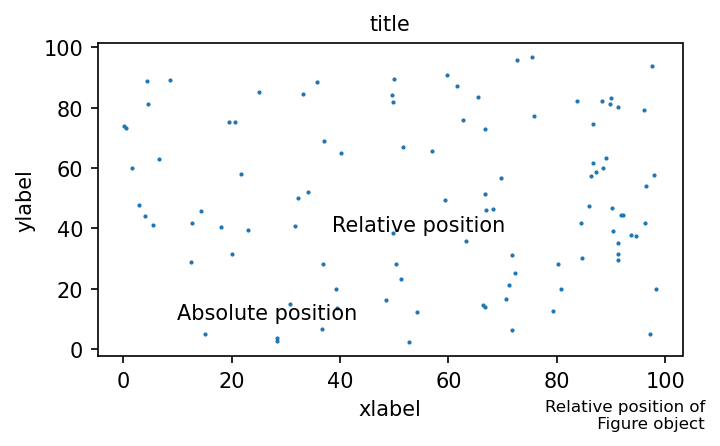
Legend placement¶
[4]:
with cplt.Single(xlabel="xlabel", ylabel="ylabel", title="title") as p:
for i in range(3):
x = np.random.rand(100)*100
y = np.random.rand(100)*100
p.ax.scatter(x,y, s=1, label=f"sample{i}")
plt.legend(loc=(1.00,0.7), frameon=False)
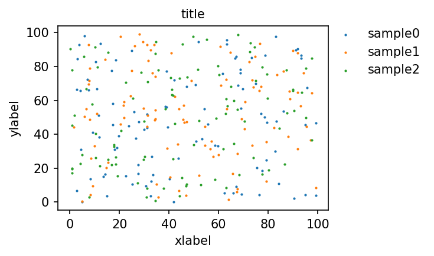
Create a custom legend
[5]:
def create_patch_for_label(
label_names: List[str],
label_title: str = "",
cmap_name: str = "tab10",
color : Union[List[str], List[Tuple]] = None,
line : bool = False,
) -> List[mpatches.Patch]:
"""Create list of patches for legend.
Args:
label_names : list of label names.
label_title : title of label handle.
cmap_name : colormap name.
color : If color is specified, use this color set to display.
line : legend becomes line style.
Examples:
>>> patches = gallery.create_patch_for_label(label_names = ["test1", "test2", "test3"], color=["red","blue", "orange"] , line=True)
>>> fig = plt.figure(figsize=(6,6), dpi=300 )
>>> ax = fig.add_subplot(111)
>>> ax.axes.xaxis.set_visible(False)
>>> ax.axes.yaxis.set_visible(False)
>>> plt.legend(handles=patches, frameon=False)
>>> plt.show()
"""
cmap = plt.get_cmap(cmap_name)
patches = []
for i, name in enumerate(label_names):
if name == "NAN":
c = "grey"
elif color == None:
c = cmap(i)
else:
c = color[i]
if line:
patch = Line2D([0], [0], color=c, label=name)
else:
patch = mpatches.Patch(color=c, label=name)
patches.append(patch)
return(patches)
[6]:
patches = create_patch_for_label(label_names = ["test1", "test2", "test3", "NAN"],
color=["red","blue", "orange", "grey"] , line=True)
with cplt.Single() as p:
p.ax.axes.xaxis.set_visible(False)
p.ax.axes.yaxis.set_visible(False)
plt.legend(handles=patches, frameon=False)
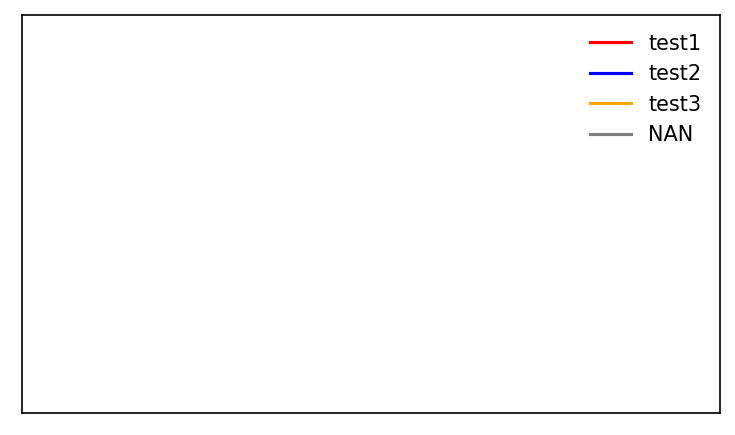
Continuous to continuous¶
[7]:
x = "age"
y = "logpopul"
with cplt.Single(xlabel=x, ylabel=y, title="scatterplot") as p:
p.ax.scatter(df[x], df[y], s=1)
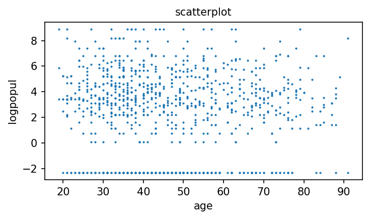
[8]:
def scatter_with_linear_reg(df : pd.DataFrame, x : str, y : str) -> None:
with cplt.Single(
xlabel=f"log[{x}]",
ylabel=y,
title="scatter with linear regression",
xlim=[10, 95]
) as p:
sns.regplot(data=df, x=x, y=y, ax=p.ax,
scatter_kws=dict(s=1, color="purple"),
line_kws=dict(color="green"))
[9]:
x = "age"
y = "logpopul"
scatter_with_linear_reg(df,x ,y)
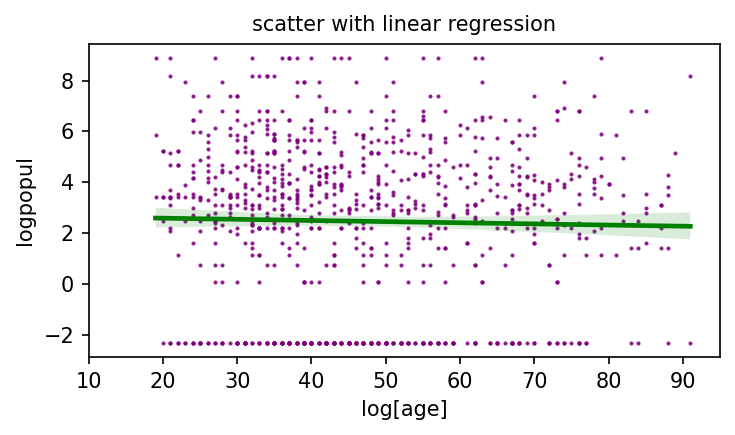
[10]:
def contourplot(df : pd.DataFrame, x : str, y : str) -> None:
with cplt.Single(figsize=(6,5), title=f"contour plot. {x} and {y}") as p:
sns.kdeplot(data=df, x=x, y =y,
common_norm=False, fill=True, ax=p.ax, n_levels=10,
cbar=True, thresh=0, cmap='viridis' )
[11]:
x = "age"
y = "logpopul"
contourplot(df, x, y)
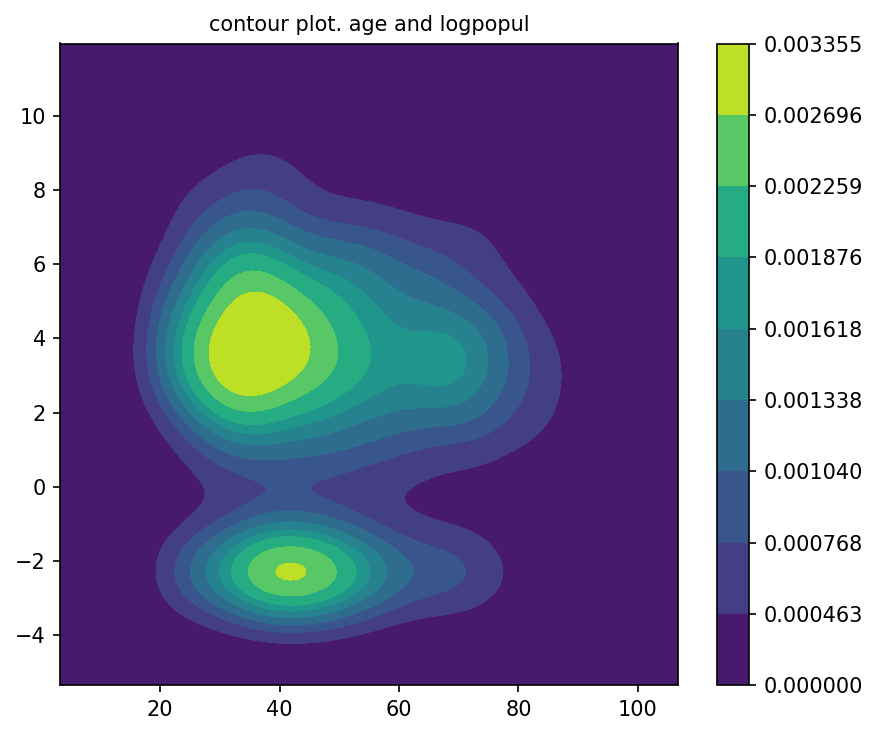
[12]:
def histogram2d(df: pd.DataFrame, x : str, y : str,
bins : Tuple[int,int], rng : Tuple[Tuple[int,int,], Tuple[int,int]]
) -> None:
with cplt.Single(xlabel=x, ylabel=y, title="2D histogram",
figsize=(7,5)) as p:
H = p.ax.hist2d(df[x], df[y], bins=bins, cmap=plt.cm.jet,
density=True, cmin=0, cmax=None, range=rng)
p.fig.colorbar(H[3],ax=p.ax)
[13]:
x = "age"
y = "logpopul"
bins = (20,20)
rng= ((10,100), (-3, 10))
histogram2d(df, x, y, bins, rng)
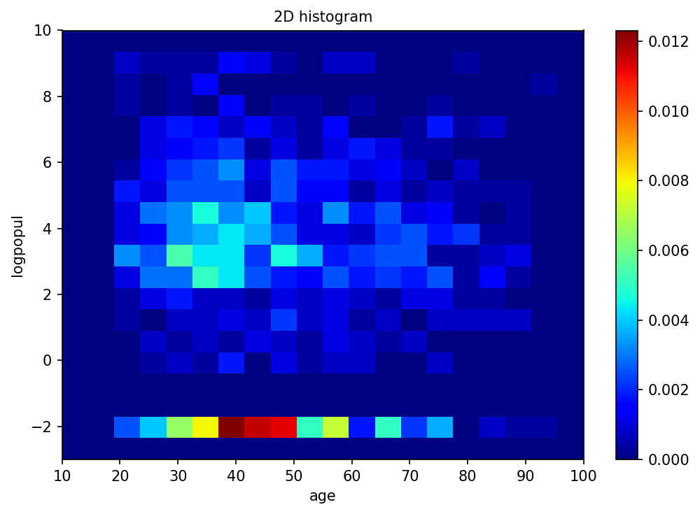
Continuous to continuous with stratification¶
[14]:
def stratified_scatter(ax, df_: pd.DataFrame, x: str, y: str, c: str) -> None:
"""
Args:
ax : axis object.
df_ : dataframe to be plotted.
x : a column name for x axis.
y : a column name for y axis.
c : a column name for stratification.
"""
columns = sorted(df_[c].unique())
for col in columns:
cond = df_[c] == col
dfM = df_.loc[cond]
ax.scatter(dfM[x], dfM[y], s=1, label=str(col))
plt.legend(bbox_to_anchor=(1, 0.98), frameon = False)
[15]:
x = "age"
y = "logpopul"
c = "educ"
with cplt.Single(xlabel=x, ylabel=y, title="stratified scatter plot") as p:
stratified_scatter(p.ax, df, x, y, c)
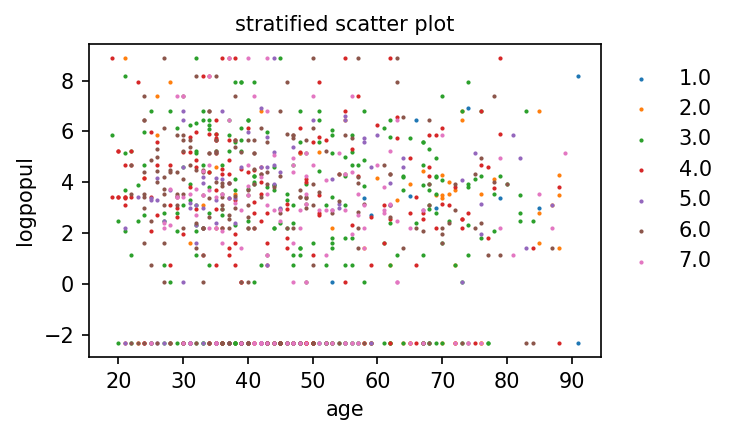
Continuous with stratification¶
[16]:
def stacked_histogram(df : pd.DataFrame, x : str, y : str, c : str) -> None:
color_n = len(df[c].unique())
palette = list(plt.cm.tab10.colors[:color_n])
with cplt.Single() as p:
sns.histplot(data=df,x=x,hue=c, fill=True, palette=palette , alpha=1 )
[17]:
x = "age"
y = "logpopul"
c = "educ"
stacked_histogram(df, x, y, c)
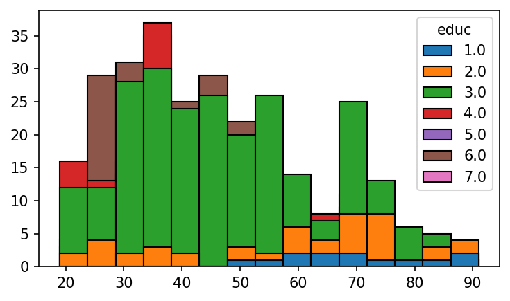
kde density with stratification¶
[18]:
def kde_density_with_stratification(
df : pd.DataFrame, x : str, y : str, c : str
) -> None:
color_n = len(df[c].unique())
palette = list(plt.cm.tab10.colors[:color_n])
with cplt.Single() as p:
sns.kdeplot(data=df, x=x, hue=c, ax=p.ax,
common_norm=False, fill=True, alpha=0.3, bw_adjust=0.5,
palette=palette)
[19]:
x = "age"
y = "logpopul"
c = "educ"
kde_density_with_stratification(df, x, y, c)
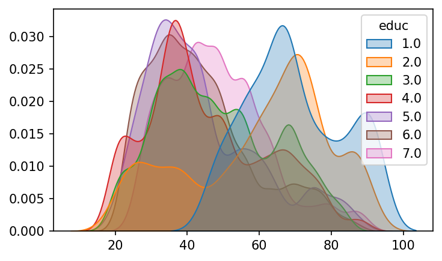
kde density area plot¶
[20]:
def kde_density_area_plot(
df : pd.DataFrame, x : str, y : str, c : str
) -> None:
color_n = len(df[c].unique())
palette = list(plt.cm.tab10.colors[:color_n])
with cplt.Single() as p:
sns.kdeplot(data=df, x=x, hue=c, ax=p.ax,
common_norm=True, multiple="fill", fill=True,
bw_adjust=0.5, palette=palette, alpha=1, linewidth=0.1 )
move_legend(p.ax, bbox_to_anchor=(1,0.98))
def move_legend(ax, new_loc="upper left", **kws):
"""move legend created by seaborn. See issues in seaborn.
https://github.com/mwaskom/seaborn/issues/2280
"""
old_legend = ax.legend_
handles = old_legend.legendHandles
labels = [t.get_text() for t in old_legend.get_texts()]
title = old_legend.get_title().get_text()
ax.legend(handles, labels, loc=new_loc, title=title, **kws)
[21]:
x = "age"
y = "logpopul"
c = "educ"
kde_density_area_plot(df, x, y, c)
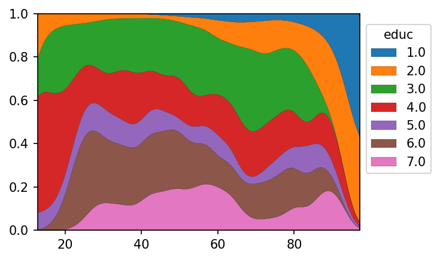
Combined version of figures¶
[22]:
def stacked_hist_kde_density_and_area_plot_with_stratification(
df : pd.DataFrame, x : str, y : str, c : str,
) -> None:
color_n = len(df[c].unique())
palette = list(plt.cm.tab10.colors[:color_n])
with cplt.Multiple(figsize=(6,8), dpi=150,grid=(3,1), label_outer=True,
suptitle="stacked hist., kde density and area plot",
) as mul:
with cplt.MulSingle(mul=mul, index=1) as p:
sns.histplot(data=df,x=x,hue=c, fill=True, palette=palette , alpha=1, ax=p.ax)
move_legend(p.ax, bbox_to_anchor=(1,0.98))
with cplt.MulSingle(mul=mul, index=2) as p:
sns.kdeplot(data=df, x=x, hue=c, ax=p.ax,
common_norm=False, fill=True, alpha=0.3, bw_adjust=0.5,
palette=palette )
move_legend(p.ax, bbox_to_anchor=(1,0.98))
with cplt.MulSingle(mul=mul, index=3) as p:
sns.kdeplot(data=df, x=x, hue=c, ax=p.ax,
common_norm=True, multiple="fill", fill=True,
bw_adjust=0.5, palette=palette, alpha=1, linewidth=0.1 )
move_legend(p.ax, bbox_to_anchor=(1,0.98))
[23]:
x = "age"
y = "logpopul"
c = "educ"
stacked_hist_kde_density_and_area_plot_with_stratification(df, x, y , c)
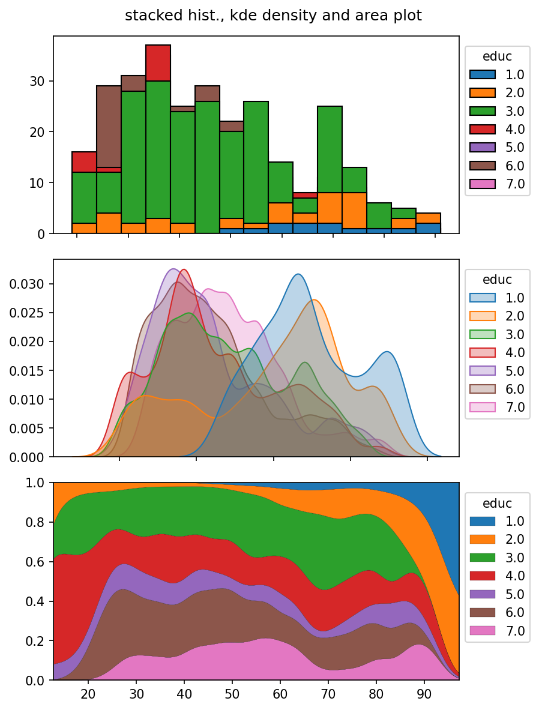
Time series visualizeation¶
Here, dataset is changed.
[24]:
df = sm.datasets.get_rdataset("Melanoma", "MASS").data
Time series barplot¶
[25]:
def time_series_simple_barplot(df : pd.DataFrame, x : str) -> None:
"""
Args:
df : dataframe.
x : a column containing int data type, supposed to be year.
"""
ser = df["year"].value_counts()
with cplt.Single(title="Yearly count of cases in dataset",
xlabel="year", ylabel="count", xrotation=90) as p:
p.ax.bar(ser.index, ser.values,
width=1, linewidth=0.1,
color="paleturquoise", edgecolor="black")
[26]:
x = "year"
time_series_simple_barplot(df, x)
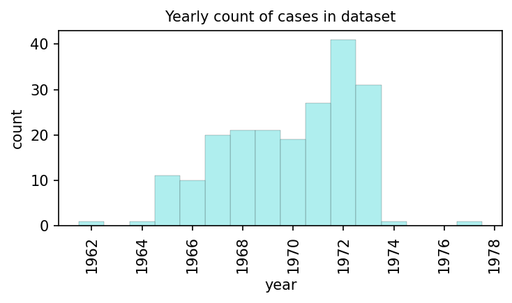
With a customizations
[27]:
def time_series_barplot(df : pd.DataFrame, x : str) -> None:
"""
Args:
df : dataframe.
x : a column containing datetime object.
"""
ser = df["year_date"].value_counts()
with cplt.Single(title="Yearly count of cases in dataset",
xlabel="year", ylabel="count",
xrotation=90) as p:
p.ax.bar(ser.index, ser.values,
width=365, linewidth=0.1,
color="paleturquoise", edgecolor="black")
p.ax.xaxis.set_major_formatter(mdates.DateFormatter("%Y/%m"))
[28]:
df["year_date"] = pd.to_datetime(df["year"].astype(str))
x = "year_date"
time_series_barplot(df, x)
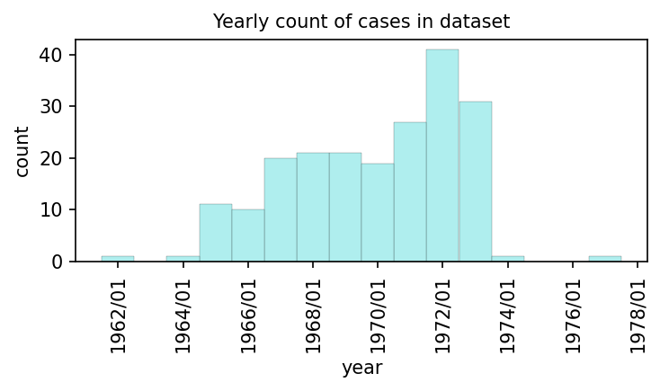
[29]:
def timeseries_heatmap(df : pd.DataFrame, time_col : str, c : str) -> None:
df_ht = pd.crosstab(df[time_col], df[c])
df_ht_per = pd.crosstab(df[time_col], df[c], normalize="index")*100
# to impute non-existing years.
for i in range(df_ht.index.min(), df_ht.index.max() + 1 ):
if i not in df_ht.index:
df_ht.loc[i] = 0
df_ht_per.loc[i] =np.nan
df_ht = df_ht.sort_index()
df_ht_per = df_ht_per.sort_index()
tick_size=6
with cplt.Multiple(grid=(1,2), figsize=(8,4)) as mul:
with cplt.MulSingle(mul=mul, index=1,title="Count",
xtickfontsize=tick_size, ytickfontsize=tick_size,
) as p:
ht = sns.heatmap(df_ht, ax=p.ax, cmap="Reds", fmt=".0f",
annot=True, linewidths=.2, annot_kws={"fontsize":6})
#ht.set_xticklabels(ht.get_xmajorticklabels(), fontsize = tick_size)
#ht.set_yticklabels(ht.get_ymajorticklabels(), fontsize = tick_size)
with cplt.MulSingle(mul=mul, index=2,title="Percentage",
xtickfontsize=6, ytickfontsize=6
) as p:
ht = sns.heatmap(df_ht_per, ax=p.ax, cmap="Reds", fmt=".1f",
annot=True, linewidths=.2, annot_kws={"fontsize":6})
[30]:
df = sm.datasets.get_rdataset("Melanoma", "MASS").data
# Change elements name for good visualization.
df["sex"] = df["sex"].replace({0:"female", 1:"male"})
time_col = "year"
c = "sex"
timeseries_heatmap(df, time_col, c)
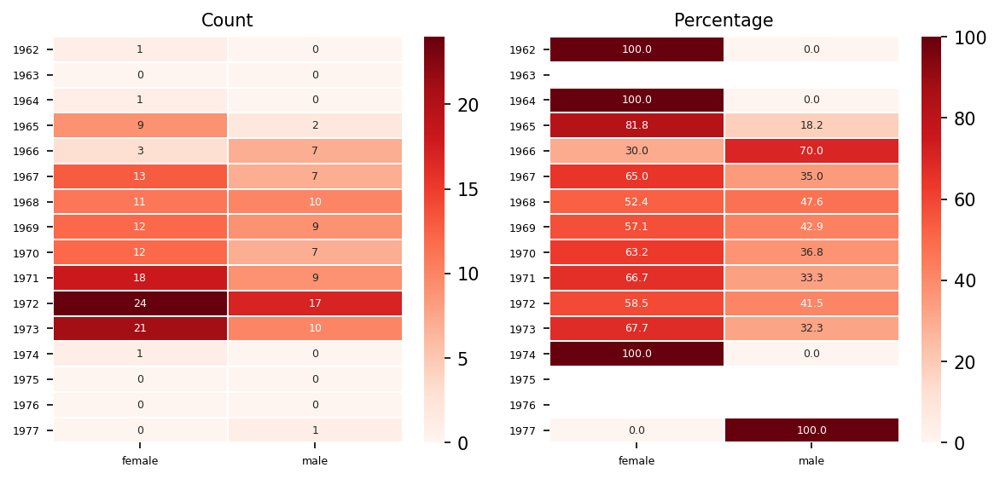
[ ]:
[ ]: